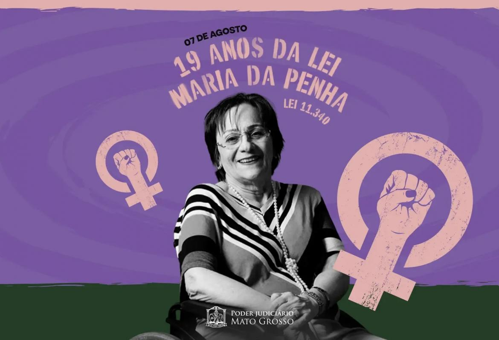
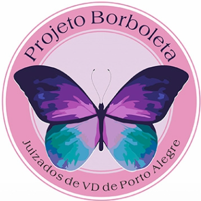
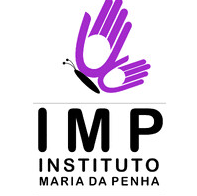
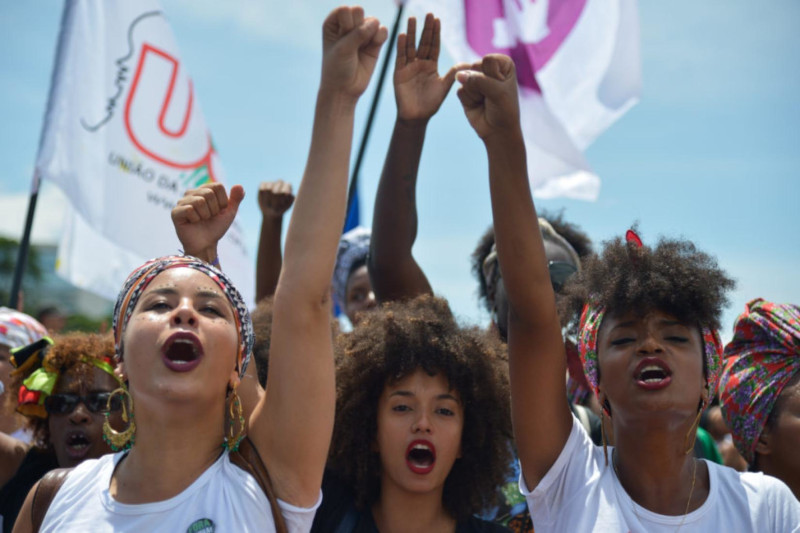

A violência doméstica é um problema social grave porque muitas vezes acontece dentro de casa, onde a vítima deveria se sentir segura. Além disso, muitas vítimas têm medo ou dificuldade de denunciar.
Acontece quando há agressão ao corpo da vítima. Ex: empurrões, tapas, socos, chutes, queimaduras ou qualquer ato que cause dor ou lesão.
São atitudes que causam dano emocional ou diminuem a autoestima da pessoa. Ex: ameaças, humilhações, manipulação, controle excessivo, isolamento de amigos e família.
Ocorre quando alguém é obrigado a participar de atos sexuais contra a própria vontade. Ex: forçar relações sexuais, impedir o uso de métodos contraceptivos ou constranger a pessoa sexualmente.
Envolve o controle ou destruição dos bens da vítima. Ex: pegar dinheiro sem permissão, destruir objetos pessoais, controlar totalmente o dinheiro da pessoa.
Relacionada a ofensas à honra da vítima. Ex: xingamentos, acusações falsas, difamação ou exposição humilhante.
A Lei Maria da Penha define violência doméstica como qualquer ação ou omissão que cause morte, lesão, sofrimento físico, sexual, psicológico ou dano moral/patrimonial dentro do ambiente familiar ou em relações afetivas. Esse tipo de violência pode acontecer entre casais, ex-parceiros, familiares ou pessoas que convivem na mesma casa.



Esses projetos buscam educar a sociedade e prevenir a violência contra a mulher.

O Disque 180 recebe denúncias e orienta vítimas de violência. Se você sofre de violência doméstica ou conhece alguém que passa por isso, não exite em ligar, uma vida pode se perder por falta de um telefonema.